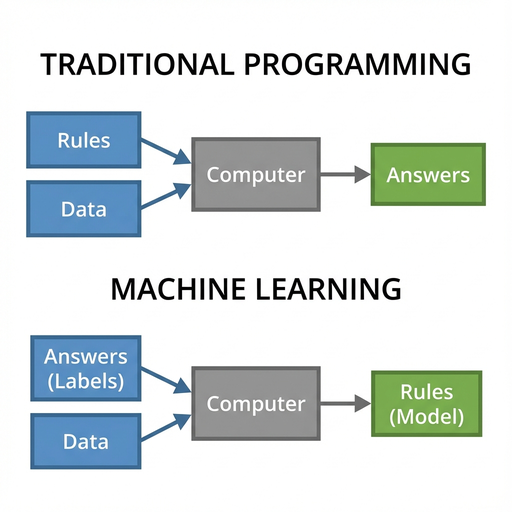
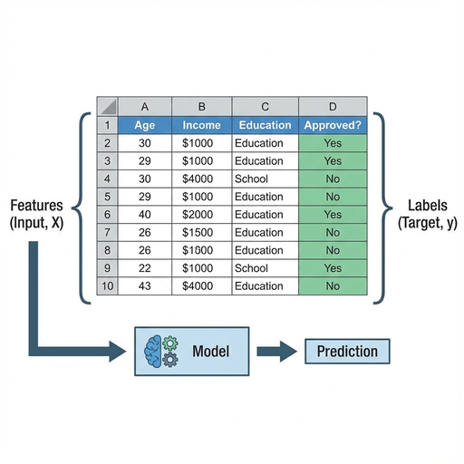
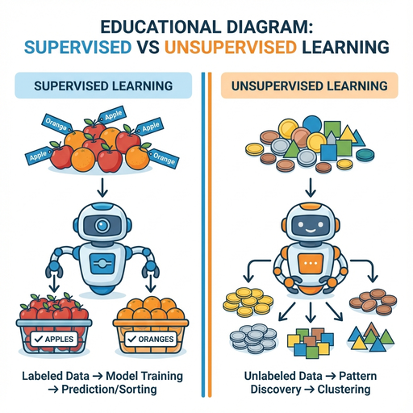
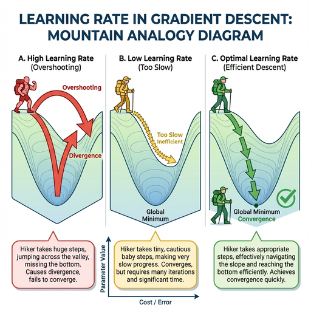
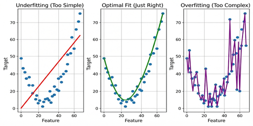
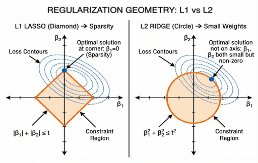
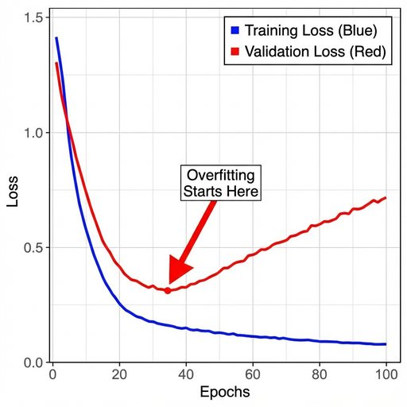
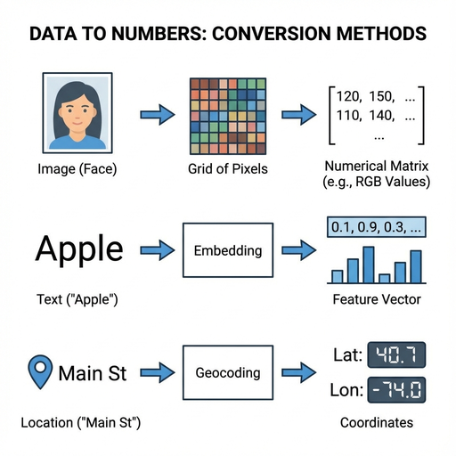

<!DOCTYPE html>
<html lang="en">

<head>
    <meta charset="UTF-8">
    <meta name="viewport" content="width=device-width, initial-scale=1.0">
    <title>Chapter 01: Intro to ML - Field Manual</title>

    <!-- Tailwind CSS -->
    <script src="https://cdn.tailwindcss.com"></script>
    <script>
        tailwind.config = {
            theme: {
                extend: {
                    colors: {
                        cyber: {
                            white: '#f8f9fa',
                            light: '#e9ecef',
                            text: '#212529',
                            neonBlue: '#0097a7',
                            neonPink: '#c2185b',
                            neonYellow: '#fbc02d',
                            dim: 'rgba(0, 151, 167, 0.05)',
                        }
                    },
                    fontFamily: {
                        mono: ['Courier New', 'Courier', 'monospace'],
                    }
                }
            }
        }
    </script>

    <!-- React & ReactDOM -->
    <script crossorigin src="https://unpkg.com/react@18/umd/react.production.min.js"></script>
    <script crossorigin src="https://unpkg.com/react-dom@18/umd/react-dom.production.min.js"></script>

    <!-- Babel -->
    <script src="https://unpkg.com/@babel/standalone/babel.min.js"></script>

    <!-- MathJax -->
    <script>
        window.MathJax = {
            tex: {
                inlineMath: [['$', '$'], ['\\(', '\\)']]
            }
        };
    </script>
    <script src="https://polyfill.io/v3/polyfill.min.js?features=es6"></script>
    <script id="MathJax-script" async src="https://cdn.jsdelivr.net/npm/mathjax@3/es5/tex-mml-chtml.js"></script>

    <style>
        body {
            background-color: #f0f2f5;
            color: #212529;
            overflow-x: hidden;
            font-family: 'Courier New', Courier, monospace;
            scroll-behavior: smooth;
        }

        /* 滚动条 */
        ::-webkit-scrollbar {
            width: 8px;
        }

        ::-webkit-scrollbar-track {
            background: #e9ecef;
        }

        ::-webkit-scrollbar-thumb {
            background: #0097a7;
            border-radius: 2px;
        }

        ::-webkit-scrollbar-thumb:hover {
            background: #c2185b;
        }

        /* 扫描线动画 */
        .scanlines {
            position: fixed;
            top: 0;
            left: 0;
            width: 100%;
            height: 100%;
            background: linear-gradient(to bottom, rgba(0, 0, 0, 0), rgba(0, 0, 0, 0) 50%, rgba(0, 0, 0, 0.03) 50%, rgba(0, 0, 0, 0.03));
            background-size: 100% 4px;
            z-index: 9999;
            pointer-events: none;
        }

        /* 切角卡片 */
        .cyber-card {
            clip-path: polygon(0 0, 100% 0, 100% calc(100% - 20px), calc(100% - 20px) 100%, 0 100%);
            border-left: 3px solid #0097a7;
            background: rgba(255, 255, 255, 0.95);
            box-shadow: 0 4px 6px -1px rgba(0, 0, 0, 0.1);
            margin-bottom: 2rem;
        }

        .cyber-card-pink {
            border-left-color: #c2185b;
        }

        .cyber-card-yellow {
            border-left-color: #fbc02d;
        }

        /* 引用块样式 */
        .cyber-quote {
            border-left: 4px solid #c2185b;
            background: rgba(194, 24, 91, 0.05);
            padding: 1rem;
            margin: 1.5rem 0;
            font-style: italic;
        }

        /* 高亮标记 */
        .highlight {
            background: rgba(251, 192, 45, 0.2);
            padding: 0 4px;
            border-bottom: 2px solid #fbc02d;
        }

        /* Sidebar Link Active State */
        .toc-link.active {
            color: #0097a7;
            border-left-color: #0097a7;
            background: rgba(0, 151, 167, 0.05);
        }

        /* Images */
        .cyber-img {
            border: 1px solid #ddd;
            padding: 4px;
            background: #fff;
            box-shadow: 4px 4px 0px rgba(0, 0, 0, 0.1);
            margin: 20px auto;
            max-width: 100%;
            display: block;
        }
    </style>
</head>

<body>
    <div id="root"></div>

    <script type="text/babel">
        const { useState, useEffect } = React;

        const Typewriter = ({ text, speed = 10, delay = 0, className = "" }) => {
            const [display, setDisplay] = useState("");
            useEffect(() => {
                let timer;
                const start = () => {
                    let i = 0;
                    timer = setInterval(() => {
                        if (i < text.length) {
                            setDisplay(text.substring(0, i + 1));
                            i++;
                        } else clearInterval(timer);
                    }, speed);
                };
                const delayTimer = setTimeout(start, delay);
                return () => { clearTimeout(delayTimer); clearInterval(timer); };
            }, [text, speed, delay]);
            return <span className={className}>{display}</span>;
        };

        const InteractiveCurves = () => {
            const [threshold, setThreshold] = useState(0.5);
            const [posRatio, setPosRatio] = useState(0.5); // 0.5 = Balanced (50/50), 0.01 = Imbalanced (1%)

            // Logistic distribution parameters
            const logisticCDF = (x, mu, s) => 1 / (1 + Math.exp(-(x - mu) / s));
            const s = 0.8;

            // Current Point Metrics
            // Signal N ~ (2, s), Noise N ~ (0, s)
            // TPR = P(Signal > t)
            const tpr = 1 - logisticCDF(threshold * 4 - 1, 2, s);
            // FPR = P(Noise > t)
            const fpr = 1 - logisticCDF(threshold * 4 - 1, 0, s);

            // Precision Calculation:
            // Precision = TP / (TP + FP)
            // TP_count = tpr * posC
            // FP_count = fpr * negC
            // P = (tpr * pos) / (tpr * pos + fpr * (1-pos))
            // Precision Calculation Helper
            const calculatePrecision = (tpRate, fpRate, pRatio) => {
                const denominator = (tpRate * pRatio) + (fpRate * (1 - pRatio));
                if (denominator < 1e-9) return 1.0; // Limit case: strict threshold -> 100% precision
                return (tpRate * pRatio) / denominator;
            };

            const precision = calculatePrecision(tpr, fpr, posRatio);

            // Generate Curve Points
            const rocPoints = [];
            const prPoints = [];

            // Iterate t from strict (high) to loose (low)
            // t=10 -> Recall ~0, t=-4 -> Recall ~1
            for (let t = -4; t <= 10; t += 0.1) {
                const p_fpr = 1 - logisticCDF(t, 0, s);
                const p_tpr = 1 - logisticCDF(t, 2, s);
                const p_prec = calculatePrecision(p_tpr, p_fpr, posRatio);

                rocPoints.push({ x: p_fpr, y: p_tpr });
                prPoints.push({ x: p_tpr, y: p_prec });
            }

            // Ensure nice start/end for the visual curve
            prPoints.push({ x: 0, y: 1 });
            prPoints.sort((a, b) => a.x - b.x);

            return (
                <div className="cyber-card p-6">
                    <h3 className="text-lg font-bold text-cyber-neonBlue mb-6">INTERACTIVE_ROC_VS_PR</h3>

                    {/* Controls */}
                    <div className="mb-8 grid md:grid-cols-2 gap-8 bg-gray-50 p-4 rounded border border-gray-200">
                        <div>
                            <label className="block text-sm font-bold text-gray-700 mb-2 font-mono">
                                1. CLASSIFICATION_THRESHOLD: <span className="text-cyber-neonBlue">{threshold.toFixed(2)}</span>
                            </label>
                            <input
                                type="range" min="0" max="1" step="0.01"
                                value={threshold} onChange={(e) => setThreshold(parseFloat(e.target.value))}
                                className="w-full h-2 bg-gray-200 rounded-lg appearance-none cursor-pointer accent-cyber-neonBlue"
                            />
                            <div className="flex justify-between text-xs text-gray-400 font-mono mt-1">
                                <span>LOOSE (Accept All)</span>
                                <span>STRICT (Reject All)</span>
                            </div>
                        </div>
                        <div>
                            <label className="block text-sm font-bold text-gray-700 mb-2 font-mono">
                                2. CLASS_IMBALANCE: <span className="text-cyber-neonPink">{(posRatio * 100).toFixed(1)}% Positives</span>
                            </label>
                            <input
                                type="range" min="0.01" max="0.5" step="0.01"
                                value={posRatio} onChange={(e) => setPosRatio(parseFloat(e.target.value))}
                                className="w-full h-2 bg-gray-200 rounded-lg appearance-none cursor-pointer accent-cyber-neonPink"
                            />
                            <div className="flex justify-between text-xs text-gray-400 font-mono mt-1">
                                <span>1% (Highly Imbalanced)</span>
                                <span>50% (Balanced)</span>
                            </div>
                        </div>
                    </div>

                    {/* Graphs */}
                    <div className="grid md:grid-cols-2 gap-8 mb-6">
                        {/* ROC Graph */}
                        <div className="flex flex-col items-center">
                            <div className="font-bold text-sm mb-2 text-gray-600">ROC Curve (TPR vs FPR)</div>
                            <div className="relative border border-gray-200 bg-white aspect-square w-full max-w-[280px]">
                                <svg className="w-full h-full" viewBox="-10 -10 120 120">
                                    {/* Axes Grid */}
                                    <line x1="0" y1="100" x2="100" y2="100" stroke="#333" strokeWidth="1" />
                                    <line x1="0" y1="100" x2="0" y2="0" stroke="#333" strokeWidth="1" />
                                    <line x1="0" y1="100" x2="100" y2="0" stroke="#eee" strokeWidth="2" strokeDasharray="5,5" />

                                    {/* X-Axis Labels */}
                                    <text x="0" y="115" fontSize="8" textAnchor="middle" fill="#666">0</text>
                                    <text x="50" y="115" fontSize="8" textAnchor="middle" fill="#666">0.5</text>
                                    <text x="100" y="115" fontSize="8" textAnchor="middle" fill="#666">1</text>

                                    {/* Curve */}
                                    <polyline
                                        points={rocPoints.map(p => `${p.x * 100},${100 - (p.y * 100)}`).join(' ')}
                                        fill="none" stroke="#0097a7" strokeWidth="3"
                                    />
                                    {/* Active Point */}
                                    <circle
                                        cx={fpr * 100} cy={100 - (tpr * 100)} r="5"
                                        fill="#c2185b" stroke="#fff" strokeWidth="2"
                                    />
                                </svg>
                                <div className="absolute bottom-1 right-2 text-[10px] text-gray-400">FPR →</div>
                                <div className="absolute top-2 left-1 text-[10px] text-gray-400">↑ TPR</div>
                            </div>
                            <div className="mt-2 text-center">
                                <span className="text-xs font-mono block text-gray-500">Does it change with imbalance?</span>
                                <strong className="text-sm text-red-600">NO</strong>
                            </div>
                        </div>

                        {/* PR Graph */}
                        <div className="flex flex-col items-center">
                            <div className="font-bold text-sm mb-2 text-gray-600">PR Curve (Precision vs Recall)</div>
                            <div className="relative border border-gray-200 bg-white aspect-square w-full max-w-[280px]">
                                <svg className="w-full h-full" viewBox="-10 -10 120 120">
                                    {/* Axes Grid */}
                                    <line x1="0" y1="100" x2="100" y2="100" stroke="#333" strokeWidth="1" />
                                    <line x1="0" y1="100" x2="0" y2="0" stroke="#333" strokeWidth="1" />

                                    {/* X-Axis Labels */}
                                    <text x="0" y="115" fontSize="8" textAnchor="middle" fill="#666">0</text>
                                    <text x="50" y="115" fontSize="8" textAnchor="middle" fill="#666">0.5</text>
                                    <text x="100" y="115" fontSize="8" textAnchor="middle" fill="#666">1</text>

                                    {/* Baseline (Pos Ratio) */}
                                    <line x1="0" y1={100 - (posRatio * 100)} x2="100" y2={100 - (posRatio * 100)} stroke="#ffcc00" strokeWidth="2" strokeDasharray="5,5" />

                                    {/* Curve */}
                                    <polyline
                                        points={prPoints.map(p => `${p.x * 100},${100 - (p.y * 100)}`).join(' ')}
                                        fill="none" stroke="#c2185b" strokeWidth="3"
                                    />
                                    {/* Active Point */}
                                    <circle
                                        cx={tpr * 100} cy={100 - (precision * 100)} r="5"
                                        fill="#0097a7" stroke="#fff" strokeWidth="2"
                                    />
                                </svg>
                                <div className="absolute bottom-1 right-2 text-[10px] text-gray-400">Recall →</div>
                                <div className="absolute top-2 left-1 text-[10px] text-gray-400">↑ Precision</div>
                            </div>
                            <div className="mt-2 text-center">
                                <span className="text-xs font-mono block text-gray-500">Does it change with imbalance?</span>
                                <strong className="text-sm text-green-600">YES (Drastically)</strong>
                            </div>
                        </div>
                    </div>

                    {/* Guidelines */}
                    <div className="border-t-2 border-gray-100 pt-4 mt-2">
                        <h4 className="font-bold text-md text-cyber-text mb-2">💡 WHEN TO USE WHICH?</h4>
                        <div className="grid md:grid-cols-2 gap-4 text-sm leading-relaxed">
                            <div className="p-3 bg-blue-50 rounded border-l-4 border-blue-400">
                                <strong className="text-blue-800 block mb-1">Use ROC AUC when:</strong>
                                <ul className="list-disc pl-4 text-gray-700 space-y-1">
                                    <li>Data is <strong>Balanced</strong> (approx 50/50).</li>
                                    <li>Overall discrimination between classes is the primary concern.</li>
                                    <li>False Positives and False Negatives are roughly equally important.</li>
                                </ul>
                            </div>
                            <div className="p-3 bg-yellow-50 rounded border-l-4 border-yellow-400">
                                <strong className="text-yellow-800 block mb-1">Use PR AUC when:</strong>
                                <ul className="list-disc pl-4 text-gray-700 space-y-1">
                                    <li>Data is <strong>Highly Imbalanced</strong> (Fraud, Rare Disease).</li>
                                    <li>Positive-class detection quality is the main objective.</li>
                                    <li>You care deeply about Precision (not just "not falming").</li>
                                </ul>
                            </div>
                        </div>
                        <p className="mt-3 text-xs text-gray-500 italic">
                            * Try dragging the "Class Imbalance" slider to the left (1%). Notice how the ROC curve looks "great" (still high up) but the PR curve drops significantly, revealing the true difficulty of the task.
                        </p>
                    </div>
                </div>
            );
        };


        const IntroPage = () => {
            const [activeSection, setActiveSection] = useState("intro");
            const [showExercise, setShowExercise] = useState(false);

            useEffect(() => {
                const observer = new IntersectionObserver((entries) => {
                    entries.forEach(entry => {
                        if (entry.isIntersecting) {
                            setActiveSection(entry.target.id);
                        }
                    });
                }, { threshold: 0.2 });

                const sections = document.querySelectorAll('section[id]');
                sections.forEach((section) => observer.observe(section));

                return () => observer.disconnect();
            }, []);

            // Re-render MathJax when content loads
            useEffect(() => {
                if (window.MathJax) {
                    window.MathJax.typesetPromise && window.MathJax.typesetPromise();
                }
            });

            const scrollToSection = (e, id) => {
                e.preventDefault();
                const element = document.getElementById(id);
                if (element) {
                    element.scrollIntoView({ behavior: 'smooth' });
                    setActiveSection(id);
                }
            };

            const sections = [
                { id: 'intro', title: '01. INTRO / WHAT IS ML?' },
                { id: 'core-concepts', title: '02. CORE CONCEPTS' },
                { id: 'types-of-ml', title: '03. TYPES OF ML' },
                { id: 'hyperparameters', title: '04. HYPERPARAMETERS' },
                { id: 'over-under', title: '05. OVER & UNDERFITTING' },
                { id: 'representation', title: '06. REPRESENTATION' },
                { id: 'evaluation', title: '07. EVALUATION' },
                { id: 'tf-pytorch', title: '08. TF VS PYTORCH' },
            ];

            return (
                <div className="min-h-screen relative pb-20">
                    <div className="scanlines"></div>

                    {/* Navigation Bar */}
                    <nav className="sticky top-0 z-50 bg-white/90 backdrop-blur border-b border-gray-200 px-6 py-4 flex justify-between items-center">
                        <a href="./index.html" className="flex items-center gap-2 text-cyber-neonBlue hover:text-cyber-neonPink transition-colors font-bold group">
                            <span className="text-xl group-hover:-translate-x-1 transition-transform">«</span>
                            <span>BACK_TO_INDEX</span>
                        </a>

                        <div className="flex items-center gap-4">
                            <span className="text-xs font-mono text-gray-400 hidden md:inline">CH_01 // INTRO_TO_ML</span>
                        </div>
                    </nav>

                    <div className="max-w-7xl mx-auto px-6 py-12 flex flex-col lg:flex-row gap-12">

                        {/* Sidebar / TOC */}
                        <aside className="hidden lg:block w-64 flex-shrink-0">
                            <div className="sticky top-24">
                                <h4 className="text-xs font-bold text-gray-400 mb-4 tracking-widest uppercase border-b border-gray-200 pb-2">
                                    // NAVIGATION
                                </h4>
                                <ul className="space-y-1 text-sm font-mono">
                                    {sections.map(sec => (
                                        <li key={sec.id}>
                                            <a href={`#${sec.id}`}
                                                onClick={(e) => scrollToSection(e, sec.id)}
                                                className={`block py-2 px-3 border-l-2 transition-all duration-300 ${activeSection === sec.id ? 'border-cyber-neonBlue text-cyber-neonBlue bg-cyber-dim' : 'border-transparent text-gray-500 hover:text-cyber-text hover:border-gray-300'}`}>
                                                {sec.title}
                                            </a>
                                        </li>
                                    ))}
                                </ul>

                                <div className="mt-8 p-4 bg-gray-50 rounded-sm border border-gray-200 text-xs text-gray-400 font-mono">
                                    <div className="mb-2 uppercase tracking-wide">Sys_Status:</div>
                                    <div className="flex items-center gap-2">
                                        <span className="w-2 h-2 rounded-full bg-green-500 animate-pulse"></span>
                                        <span>ONLINE</span>
                                    </div>
                                </div>
                            </div>
                        </aside>

                        {/* Main Content */}
                        <main className="flex-1 max-w-3xl">
                            <h1 className="text-3xl md:text-4xl font-black text-cyber-text mb-8">Chapter 1 Introduction To Machine Learning</h1>

                            {/* Section 1: Intro */}
                            <section id="intro" className="mb-16 border-b-2 border-dashed border-gray-300 pb-10 scroll-mt-24">
                                <h1 className="text-4xl md:text-5xl font-black text-cyber-text mb-4">
                                    <span className="text-cyber-neonBlue text-2xl block mb-2 font-mono">01.</span>
                                    INTRO TO MACHINE LEARNING
                                </h1>
                                <p className="text-xl text-gray-600 leading-relaxed font-mono mb-8">
                                    <Typewriter text="Giving computers the ability to learn without being explicitly programmed." speed={15} />
                                </p>

                                <div className="cyber-card p-6 md:p-8">
                                    <h3 className="text-lg font-bold text-cyber-neonBlue mb-4">WHAT_IS_MACHINE_LEARNING?</h3>
                                    <p className="mb-4 text-gray-700 leading-7">
                                        Imagine you want to teach a child to distinguish between an <span className="highlight">apple</span> and an <span className="highlight">orange</span>. You wouldn't give them a strict list of rules like "if it's red and round, it's an apple" because apples can be green, and oranges can be roundish-red too. Instead, you show them many pictures of apples and oranges and correct them until they "get it."
                                    </p>
                                    <p className="mb-4 text-gray-700 leading-7">
                                        <strong>Machine Learning</strong> is the same concept applied to computers. Instead of explicitly programming a computer with every single rule (which is often impossible), we feed it data (examples) and let it figure out the patterns on its own.
                                    </p>

                                    <div className="cyber-quote text-gray-600">
                                        KEY TAKEAWAY: Traditional Programming is giving the computer strict rules. Machine Learning is giving the computer examples and letting it learn the rules. (f: x-{">"}y; and we are going to find the function f)
                                    </div>

                                    

                                    <div className="mt-6 text-sm text-gray-600 border-t border-gray-100 pt-4">
                                        <p className="font-bold mb-2">Formal Definition (Tom Mitchell, 1997):</p>
                                        <p className="italic">"A computer program is said to learn from experience E with respect to some class of tasks T and performance measure P, if its performance at tasks in T, as measured by P, improves with experience E."</p>
                                    </div>
                                </div>
                            </section>

                            {/* Section 2: Core Concepts */}
                            <section id="core-concepts" className="mb-16 scroll-mt-24">
                                <h2 className="text-2xl font-bold text-cyber-neonBlue mb-6 flex items-center gap-2">
                                    <span className="w-2 h-6 bg-cyber-neonBlue"></span>
                                    CORE_CONCEPTS_&_TERMINOLOGY
                                </h2>

                                

                                <div className="cyber-card p-6 md:p-8">
                                    <ul className="space-y-4">
                                        <li className="flex gap-3">
                                            <span className="font-bold text-cyber-neonBlue min-w-[120px]">Dataset:</span>
                                            <span>The collection of examples used for learning.</span>
                                        </li>
                                        <li className="flex gap-3">
                                            <span className="font-bold text-cyber-neonBlue min-w-[120px]">Features $x$:</span>
                                            <span>The input variables or attributes (e.g., the frequency of the word "free" in an email).</span>
                                        </li>
                                        <li className="flex gap-3">
                                            <span className="font-bold text-cyber-neonBlue min-w-[120px]">Labels $y$:</span>
                                            <span>The output or target variable we want to predict (e.g., "Spam" or "Not Spam").</span>
                                        </li>
                                        <li className="flex gap-3">
                                            <span className="font-bold text-cyber-neonBlue min-w-[120px]">Model:</span>
                                            <span>The mathematical representation or "engine" that captures patterns. In math terms, it is a function $f(x) \approx y$.</span>
                                        </li>
                                        <li className="flex gap-3">
                                            <span className="font-bold text-cyber-neonBlue min-w-[120px]">Training:</span>
                                            <span>The process of optimizing the model's parameters to minimize error on the dataset.</span>
                                        </li>
                                        <li className="flex gap-3">
                                            <span className="font-bold text-cyber-neonBlue min-w-[120px]">Inference:</span>
                                            <span>Using the trained model to make predictions on new data.</span>
                                        </li>
                                    </ul>
                                </div>
                            </section>

                            {/* Section 3: Types of ML */}
                            <section id="types-of-ml" className="mb-16 scroll-mt-24">
                                <h2 className="text-2xl font-bold text-cyber-neonPink mb-6 flex items-center gap-2">
                                    <span className="w-2 h-6 bg-cyber-neonPink"></span>
                                    TYPES_OF_MACHINE_LEARNING
                                </h2>

                                <div className="mb-8">
                                    
                                </div>

                                <div className="space-y-6">
                                    {/* Supervised */}
                                    <div className="cyber-card cyber-card-pink p-6">
                                        <h3 className="text-lg font-bold text-cyber-neonPink mb-2">A. Supervised Learning</h3>
                                        <p className="text-sm text-gray-500 mb-4 italic">"Learning with an answer key."</p>
                                        <ul className="list-disc pl-5 text-gray-700 space-y-2">
                                            <li><strong className="text-cyber-text">Casual Definition:</strong> You show the computer an image of a cat and tell it "This is a cat."</li>
                                            <li><strong className="text-cyber-text">Formal Definition:</strong> {'Given a training set $D = \\{(x_1, y_1), ..., (x_n, y_n)\\}$, learn $f: X \\rightarrow Y$.'}</li>
                                            <li><strong className="text-cyber-text">Sub-types:</strong> Classification (Categories), Regression (Continuous Values).</li>
                                        </ul>
                                    </div>

                                    {/* Unsupervised */}
                                    <div className="cyber-card cyber-card-yellow p-6">
                                        <h3 className="text-lg font-bold text-cyber-neonYellow mb-2 text-black">B. Unsupervised Learning</h3>
                                        <p className="text-sm text-gray-500 mb-4 italic">"Learning without a teacher."</p>
                                        <ul className="list-disc pl-5 text-gray-700 space-y-2">
                                            <li><strong className="text-cyber-text">Casual Definition:</strong> Sort coins into piles based on similarity without knowing their names.</li>
                                            <li><strong className="text-cyber-text">Formal Definition:</strong> {'Given data $D = \\{x_1, ..., x_n\\}$ without labels, find patterns/structure.'}</li>
                                            <li><strong className="text-cyber-text">Examples:</strong> Customer segmentation, Anomaly detection.</li>
                                        </ul>
                                    </div>

                                    {/* RL */}
                                    <div className="cyber-card p-6 border-l-gray-800">
                                        <h3 className="text-lg font-bold text-gray-800 mb-2">C. Reinforcement Learning (RL)</h3>
                                        <p className="text-sm text-gray-500 mb-4 italic">"Learning by trial and error."</p>
                                        <ul className="list-disc pl-5 text-gray-700 space-y-2">
                                            <li><strong className="text-cyber-text">Casual Definition:</strong> Training a dog with treats (+1) and scoldings (-1).</li>
                                            <li><strong className="text-cyber-text">Formal Definition:</strong> Learn a policy $\pi(s)$ to maximize expected cumulative reward.</li>
                                            <li><strong className="text-cyber-text">Examples:</strong> AlphaGo, Self-driving cars.</li>
                                        </ul>
                                    </div>
                                </div>
                            </section>

                            {/* Section 4: Hyperparameters */}
                            <section id="hyperparameters" className="mb-16 scroll-mt-24">
                                <h2 className="text-2xl font-bold text-cyber-neonBlue mb-6 flex items-center gap-2">
                                    <span className="w-2 h-6 bg-cyber-neonBlue"></span>
                                    HYPERPARAMETERS
                                </h2>
                                <p className="mb-6 text-gray-700">Settings configured <em>before</em> training, unlike weights which are learned <em>during</em> training.</p>

                                <div className="grid gap-6">
                                    <div>
                                        <h4 className="font-bold text-lg mb-2">1. Learning Rate ($\alpha$)</h4>
                                        <div className="cyber-card p-4 bg-gray-50">
                                            <p className="mb-2">The size of the steps you take when trying to walk down a mountain blindly.</p>
                                            <p className="font-mono text-sm text-gray-500">$\theta_{"{"}n + 1{"}"} = \theta_{"{"}n{"}"} - \alpha \nabla L(\theta)$</p>
                                            
                                        </div>
                                    </div>

                                    <div className="grid md:grid-cols-2 gap-4">
                                        <div className="cyber-card p-4 bg-gray-50">
                                            <h4 className="font-bold text-lg mb-2">2. Epochs</h4>
                                            <p className="text-sm">Number of times you read through the entire textbook before the exam. One complete pass of the dataset.</p>
                                        </div>
                                        <div className="cyber-card p-4 bg-gray-50">
                                            <h4 className="font-bold text-lg mb-2">3. Batch Size</h4>
                                            <p className="text-sm">Number of practice problems solved before checking the answer key and updating understanding.</p>
                                        </div>
                                    </div>
                                </div>
                            </section>

                            {/* Section 5: Overfitting / Underfitting */}
                            <section id="over-under" className="mb-16 scroll-mt-24">
                                <h2 className="text-2xl font-bold text-cyber-neonPink mb-6 flex items-center gap-2">
                                    <span className="w-2 h-6 bg-cyber-neonPink"></span>
                                    OVERFITTING_&_UNDERFITTING
                                </h2>
                                <p className="mb-6 text-gray-700">The "Bias-Variance Tradeoff": finding the balance between generalizing and memorizing.</p>

                                

                                <div className="space-y-8">
                                    <div>
                                        <h3 className="text-xl font-bold mb-2">A. Underfitting (High Bias)</h3>
                                        <p className="text-gray-600 mb-2">Model is too simple. Fails both practice test (Training) and real exam (Validation).</p>
                                        <div className="bg-red-50 text-red-800 p-3 rounded text-sm"><span className="font-bold">Fix:</span> Increase complexity, add features, train longer.</div>
                                    </div>

                                    <div>
                                        <h3 className="text-xl font-bold mb-2">B. Overfitting (High Variance)</h3>
                                        <p className="text-gray-600 mb-2">Model captures noise/randomness. Aced the practice test (Low Training Error) but failed the real exam (High Validation Error).</p>
                                        <div className="bg-blue-50 text-blue-800 p-3 rounded text-sm"><span className="font-bold">Fix:</span> More data, Regularization, Simplify model, Early stopping.</div>
                                    </div>

                                    <div>
                                        <h3 className="text-xl font-bold mb-2">C. Regularization</h3>
                                        <p className="text-gray-600 mb-2">{'Penalizing model complexity. Goal: Minimize $\\text{Error} + \\lambda \\times \\text{Complexity}$.'}$\\lambda$ is the regularization parameter</p>
                                        <div className="grid md:grid-cols-2 gap-4 mt-4">
                                            <div className="border border-gray-200 p-4 rounded">
                                                <div className="font-bold mb-1">L1 (Lasso)</div>
                                                <div className="text-xs text-gray-500 mb-2">Penalize absolute value $|w|$</div>
                                                <div className="text-sm mb-2">Drives weights to <strong>zero</strong>. Good for feature selection.</div>
                                                <div className="text-xs font-mono bg-gray-100 p-1 rounded">
                                                    {'$J(\\theta) = MSE + \\lambda \\sum_{i=1}^{n} |w_i|$'}
                                                </div>
                                            </div>
                                            <div className="border border-gray-200 p-4 rounded">
                                                <div className="font-bold mb-1">L2 (Ridge)</div>
                                                <div className="text-xs text-gray-500 mb-2">Penalize square $w^2$</div>
                                                <div className="text-sm mb-2">Drives weights <strong>close to zero</strong>. Prevents dominance.</div>
                                                <div className="text-xs font-mono bg-gray-100 p-1 rounded">
                                                    {'$J(\\theta) = MSE + \\lambda \\sum_{i=1}^{n} w_i^2$'}
                                                </div>
                                            </div>
                                        </div>
                                        
                                    </div>

                                    <div>
                                        <h3 className="text-xl font-bold mb-2">D. Detection</h3>
                                        <p className="text-gray-600 mb-4">Watch the loss curves. If Validation Loss starts rising while Training Loss drops, STOP.</p>
                                        
                                    </div>
                                </div>
                            </section>

                            {/* Section 6: Representation */}
                            <section id="representation" className="mb-16 scroll-mt-24">
                                <h2 className="text-2xl font-bold text-cyber-neonYellow mb-6 flex items-center gap-2">
                                    <span className="w-2 h-6 bg-cyber-neonYellow"></span>
                                    REPRESENTATION
                                </h2>
                                <p className="mb-4 text-gray-700">{'Translating real-world data (text, images) into numerical vectors ($x \\in \\mathbb{R}^d$).'}</p>
                                

                                <div className="space-y-6">
                                    <div className="cyber-card p-6">
                                        <h4 className="font-bold text-lg mb-3">Sparse vs Dense</h4>
                                        <ul className="list-disc pl-5 text-gray-700 text-sm space-y-2">
                                            <li><strong className="text-cyber-neonBlue">Sparse:</strong> Mostly zeros (e.g., One-Hot). Simple but high memory.</li>
                                            <li><strong className="text-cyber-neonBlue">Dense:</strong> Mostly non-zeros (e.g., Embeddings). Compact, captures meaning.</li>
                                        </ul>
                                    </div>

                                    <div className="cyber-card p-6">
                                        <h4 className="font-bold text-lg mb-3">Handling Categories</h4>
                                        <div className="space-y-4">
                                            <div>
                                                <span className="font-bold text-sm block">Option A: One-Hot Encoding</span>
                                                <span className="text-xs text-gray-500">Every category is a separate dimension. Good for small sets, bad for 10k+ categories.</span>
                                            </div>
                                            <div>
                                                <span className="font-bold text-sm block">Option B: Embeddings / Geocoding</span>
                                                <span className="text-xs text-gray-500">Map to continuous vector space. Compact and captures similarity.</span>
                                            </div>
                                        </div>
                                    </div>

                                    {/* Exercise */}
                                    <div className="border-2 border-cyber-neonBlue rounded bg-blue-50/20 p-6">
                                        <h3 className="font-bold text-cyber-neonBlue mb-2">🧠 EXERCISE: Feature Crossing</h3>
                                        <p className="text-sm mb-4">Which feature/cross helps predict <strong>city-specific</strong> housing prices based on `roomsPerPerson`?</p>

                                        <div className="space-y-2 mb-4 text-sm font-mono">
                                            <div className="p-2 bg-white border border-gray-200">1. [latitude X longitude X roomsPerPerson]</div>
                                            <div className="p-2 bg-white border-2 border-green-400">2. [binned_latitude X binned_longitude X binned roomsPerPerson]</div>
                                            <div className="p-2 bg-white border border-gray-200">3. [binned_latitude], [binned_longitude], [binned roomsPerPerson]</div>
                                            <div className="p-2 bg-white border border-gray-200">4. [binned_latitude X binned roomsPerPerson], [binned_longitude X binned roomsPerPerson]</div>
                                        </div>

                                        <button
                                            onClick={() => setShowExercise(!showExercise)}
                                            className="text-xs bg-cyber-neonBlue text-white px-3 py-1 rounded hover:bg-cyber-neonPink transition-colors">
                                            {showExercise ? "HIDE_ANSWER" : "REVEAL_ANSWER"}
                                        </button>

                                        {showExercise && (
                                            <div className="mt-4 text-sm bg-white p-4 border-l-4 border-green-500 animate-fade-in shadow-sm">
                                                <strong className="text-green-600 block mb-1">Correct Answer: 2</strong>
                                                <p className="text-gray-600">
                                                    Crossing binned lat X binned lon creates a "grid" (sections of a map). Crossing that with rooms allows the model to learn unique weights for "High Rooms in San Francisco" vs "High Rooms in Sacramento".
                                                </p>
                                            </div>
                                        )}
                                    </div>
                                </div>
                            </section>

                            {/* Section 7: Evaluation */}
                            <section id="evaluation" className="mb-16 scroll-mt-24">
                                <h2 className="text-2xl font-bold text-cyber-neonPink mb-6 flex items-center gap-2">
                                    <span className="w-2 h-6 bg-cyber-neonPink"></span>
                                    EVALUATION_METRICS
                                </h2>
                                <p className="mb-8 text-gray-700">How do we know if our model is actually "good"? Accuracy is rarely enough.</p>

                                <div className="space-y-12">

                                    {/* CLASSIFICATION */}
                                    <div>
                                        <h3 className="text-xl font-bold text-gray-800 mb-4 border-b border-gray-200 pb-2">A. Classification Metrics</h3>

                                        <div className="mb-8 overflow-x-auto">
                                            <h4 className="font-bold text-md text-cyber-neonBlue mb-3">1. The Confusion Matrix</h4>

                                            <div className="flex flex-col items-center">
                                                {/* Top Label */}
                                                <div className="font-bold text-gray-700 mb-2 tracking-wider text-sm">ACTUAL CLASS (GROUND TRUTH)</div>

                                                <div className="flex items-center gap-2">
                                                    {/* Left Label */}
                                                    <div className="-rotate-90 font-bold text-gray-700 whitespace-nowrap text-sm w-8">
                                                        PREDICTED CLASS
                                                    </div>

                                                    {/* Matrix */}
                                                    <div>
                                                        <div className="grid grid-cols-2 gap-0 mb-1">
                                                            <div className="text-center text-xs font-mono text-gray-400">Positive</div>
                                                            <div className="text-center text-xs font-mono text-gray-400">Negative</div>
                                                        </div>
                                                        <div className="grid grid-cols-[auto_1fr_1fr] gap-1 items-center">
                                                            <div className="text-xs font-mono text-gray-400 -rotate-90 h-8">Positive</div>

                                                            {/* TP */}
                                                            <div className="bg-green-100 p-4 w-32 h-32 flex flex-col justify-center items-center border border-green-200">
                                                                <span className="text-2xl font-bold text-green-700">TP</span>
                                                                <span className="text-xs text-gray-500 font-bold">True Positive</span>
                                                                <span className="text-[10px] text-gray-400 mt-1">Hit</span>
                                                            </div>


                                                            {/* FP */}
                                                            <div className="bg-red-50 p-4 w-32 h-32 flex flex-col justify-center items-center border border-red-100">
                                                                <span className="text-2xl font-bold text-red-700">FP</span>
                                                                <span className="text-xs text-gray-500 font-bold">False Positive</span>
                                                                <span className="text-[10px] text-red-400 font-bold uppercase mt-1">Type I Error</span>
                                                            </div>

                                                            <div className="text-xs font-mono text-gray-400 -rotate-90 h-8">Negative</div>

                                                            {/* FN */}
                                                            <div className="bg-red-50 p-4 w-32 h-32 flex flex-col justify-center items-center border border-red-100">
                                                                <span className="text-2xl font-bold text-red-700">FN</span>
                                                                <span className="text-xs text-gray-500 font-bold">False Negative</span>
                                                                <span className="text-[10px] text-red-400 font-bold uppercase mt-1">Type II Error</span>
                                                            </div>

                                                            {/* TN */}
                                                            <div className="bg-green-100 p-4 w-32 h-32 flex flex-col justify-center items-center border border-green-200">
                                                                <span className="text-2xl font-bold text-green-700">TN</span>
                                                                <span className="text-xs text-gray-500 font-bold">True Negative</span>
                                                                <span className="text-[10px] text-gray-400 mt-1">Correct Rejection</span>
                                                            </div>
                                                        </div>
                                                    </div>
                                                </div>
                                            </div>
                                        </div>

                                        <div className="grid gap-6 md:grid-cols-2 mb-8">
                                            <div className="cyber-card p-5">
                                                <div className="flex justify-between items-baseline mb-2">
                                                    <h5 className="font-bold text-cyber-text">Precision</h5>
                                                    <span className="font-mono text-xs text-gray-400">Formula: $TP / (TP+FP)$</span>
                                                </div>
                                                <p className="text-sm text-gray-600 mb-3">"Of all the ones I predicted as Positive, how many were actually Positive?"</p>
                                                <div className="text-xs bg-yellow-50 p-2 border-l-2 border-yellow-400">
                                                    <strong>Use when:</strong> False Positives are expensive (e.g., Spam filter - don't delete important email).
                                                </div>
                                            </div>

                                            <div className="cyber-card p-5">
                                                <div className="flex justify-between items-baseline mb-2">
                                                    <h5 className="font-bold text-cyber-text">Recall (TPR)</h5>
                                                    <span className="font-mono text-xs text-gray-400">Formula: $TP / (TP+FN)$</span>
                                                </div>
                                                <p className="text-sm text-gray-600 mb-3">"Of all the real Positives, how many did I find?"</p>
                                                <div className="text-xs bg-yellow-50 p-2 border-l-2 border-yellow-400">
                                                    <strong>Use when:</strong> False Negatives are dangerous (e.g., Cancer detection - better to alarm healthy person than miss sick one).
                                                </div>
                                            </div>

                                            <div className="cyber-card p-5 border-l-red-400">
                                                <div className="flex justify-between items-baseline mb-2">
                                                    <h5 className="font-bold text-cyber-text">False Positive Rate (FPR)</h5>
                                                    <span className="font-mono text-xs text-gray-400">Formula: $FP / (FP+TN)$</span>
                                                </div>
                                                <p className="text-sm text-gray-600 mb-3">"Of all the real Negatives, how many did I incorrectly flag?"</p>
                                                <div className="text-xs bg-red-50 p-2 border-l-2 border-red-400">
                                                    <strong>Use when:</strong> You want to minimize false alarms (Type I Errors).
                                                </div>
                                            </div>

                                            <div className="cyber-card p-5">
                                                <div className="flex justify-between items-baseline mb-2">
                                                    <h5 className="font-bold text-cyber-text">F1-Score</h5>
                                                    <span className="font-mono text-xs text-gray-400">Formula: $2 * (P*R)/(P+R)$</span>
                                                </div>
                                                <p className="text-sm text-gray-600 mb-3">Harmonic mean of Precision and Recall.</p>
                                                <div className="text-xs bg-yellow-50 p-2 border-l-2 border-yellow-400">
                                                    <strong>Use when:</strong> You need a balance, or classes are imbalanced.
                                                </div>
                                            </div>

                                            <div className="cyber-card p-5 border-l-gray-400">
                                                <div className="flex justify-between items-baseline mb-2">
                                                    <h5 className="font-bold text-cyber-text">Accuracy (Why it fails)</h5>
                                                    <span className="font-mono text-xs text-gray-400">Formula: $(TP+TN) / Total$</span>
                                                </div>
                                                <p className="text-sm text-gray-600 mb-3">If 99% of data is Class A, a model that guesses "Class A" for everything has 99% accuracy but is useless.</p>
                                            </div>
                                        </div>

                                        <h4 className="font-bold text-md text-cyber-neonBlue mb-3">2. ROC & AUC</h4>
                                        <p className="text-sm text-gray-700 mb-4">
                                            The <strong>ROC (Receiver Operating Characteristic)</strong> curve plots TPR vs FPR at different classification thresholds.
                                            <strong>AUC (Area Under Curve)</strong> is a single number summary (1.0 = Perfect, 0.5 = Random Guess).
                                        </p>

                                        <InteractiveCurves />
                                    </div>

                                    {/* REGRESSION */}
                                    <div className="mt-12">
                                        <h3 className="text-xl font-bold text-gray-800 mb-4 border-b border-gray-200 pb-2">B. Regression Metrics</h3>
                                        <div className="overflow-x-auto">
                                            <table className="w-full text-sm text-left border-collapse">
                                                <thead>
                                                    <tr className="bg-gray-100 text-gray-600 font-mono text-xs uppercase">
                                                        <th className="p-3 border">Metric</th>
                                                        <th className="p-3 border">Formula</th>
                                                        <th className="p-3 border">Pros / Cons</th>
                                                    </tr>
                                                </thead>
                                                <tbody className="divide-y divide-gray-200">
                                                    <tr>
                                                        <td className="p-3 border font-bold">MSE (Mean Squared Error)</td>
                                                        <td className="p-3 border font-mono text-xs">{'$\\frac{1}{n}\\sum(y - \\hat{y})^2$'}</td>
                                                        <td className="p-3 border text-xs">
                                                            <span className="text-green-600 block">Pro:</span> Easy derivatives (great for Gradient Descent).<br />
                                                            <span className="text-red-600 block mt-1">Con:</span> Sensitive to outliers (errors are squared!).
                                                        </td>
                                                    </tr>
                                                    <tr>
                                                        <td className="p-3 border font-bold">MAE (Mean Absolute Error)</td>
                                                        <td className="p-3 border font-mono text-xs">{'$\\frac{1}{n}\\sum|y - \\hat{y}| $'}</td>
                                                        <td className="p-3 border text-xs">
                                                            <span className="text-green-600 block">Pro:</span> Robust to outliers.<br />
                                                            <span className="text-red-600 block mt-1">Con:</span> Harder to differentiate (sharp point at 0).
                                                        </td>
                                                    </tr>
                                                    <tr>
                                                        <td className="p-3 border font-bold">RMSE (Root MSE)</td>
                                                        <td className="p-3 border font-mono text-xs">{'$\\sqrt{MSE}$'}</td>
                                                        <td className="p-3 border text-xs">
                                                            <span className="text-green-600 block">Pro:</span> Same units as target variable (interpretable).
                                                        </td>
                                                    </tr>
                                                    <tr>
                                                        <td className="p-3 border font-bold">$R^2$ (R-Squared)</td>
                                                        <td className="p-3 border font-mono text-xs">{'$1 - \\frac{\\sum(y-\\hat{y})^2}{\\sum(y-\\bar{y})^2}$'}</td>
                                                        <td className="p-3 border text-xs">
                                                            <span className="text-green-600 block">Pro:</span> Scale independent (0 to 1). <br />
                                                            <span className="text-gray-500">Interpretation: Explainable Variance.</span>
                                                        </td>
                                                    </tr>
                                                </tbody>
                                            </table>
                                        </div>
                                    </div>
                                </div>
                            </section>

                            {/* Section 8: TF vs PyTorch */}
                            <section id="tf-pytorch" className="mb-12 scroll-mt-24">
                                <h2 className="text-2xl font-bold text-gray-800 mb-6 border-b-4 border-gray-800 inline-block">
                                    <span className="text-cyber-neonBlue text-xl mr-2 font-mono">08.</span>
                                    TF_VS_PYTORCH
                                </h2>
                                <div className="overflow-x-auto">
                                    <table className="w-full text-sm text-left border-collapse">
                                        <thead>
                                            <tr className="bg-gray-800 text-white font-mono text-xs uppercase">
                                                <th className="p-3 border">Feature</th>
                                                <th className="p-3 border bg-orange-600">TensorFlow</th>
                                                <th className="p-3 border bg-red-700">PyTorch</th>
                                            </tr>
                                        </thead>
                                        <tbody className="divide-y divide-gray-200 font-mono text-xs md:text-sm">
                                            <tr>
                                                <td className="p-3 border font-bold">Origin</td>
                                                <td className="p-3 border">Google Brain</td>
                                                <td className="p-3 border">Meta (Facebook)</td>
                                            </tr>
                                            <tr>
                                                <td className="p-3 border font-bold">Philosophy</td>
                                                <td className="p-3 border">Static Graph (Historically)</td>
                                                <td className="p-3 border">Dynamic Graph (Pythonic)</td>
                                            </tr>
                                            <tr>
                                                <td className="p-3 border font-bold">Curve</td>
                                                <td className="p-3 border">Steep / Verbose</td>
                                                <td className="p-3 border">Easy / Intuitive</td>
                                            </tr>
                                            <tr>
                                                <td className="p-3 border font-bold">Deployment</td>
                                                <td className="p-3 border text-green-600 font-bold">Excellent (TFLite, Serving)</td>
                                                <td className="p-3 border">Good (TorchScript)</td>
                                            </tr>
                                            <tr>
                                                <td className="p-3 border font-bold">Use Case</td>
                                                <td className="p-3 border">Production / Industry</td>
                                                <td className="p-3 border">Research / Academia</td>
                                            </tr>
                                        </tbody>
                                    </table>
                                </div>
                            </section>

                            {/* Footer */}
                            <div className="flex justify-between items-center border-t border-gray-200 pt-8 mt-12">
                                <button className="text-gray-400 text-sm cursor-not-allowed font-mono">« PREV</button>
                                <a href="2_supervised.html" className="flex items-center gap-2 text-cyber-neonBlue font-bold hover:underline cursor-not-allowed opacity-50 font-mono">
                                    NEXT: Classic Supervised Models »
                                </a>
                            </div>
                        </main>
                    </div>
                </div>
            );
        };

        const root = ReactDOM.createRoot(document.getElementById('root'));
        root.render(<IntroPage />);
    </script>
</body>

</html>